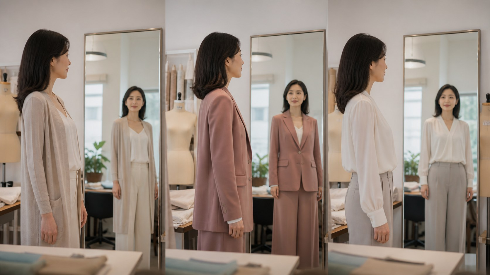

日常美化穿搭
穿衣技巧与体态｜挺拔，就是最好看的姿态
与其纠结显瘦还是显丰满，不如先学会用领型、面料和版型扬长避短，再把重心放在抬头挺胸的体态上。

很多人把穿衣想得太复杂，总在盘算这件是否显瘦、那件是否显胸。其实真正让穿搭好看的，往往不是几厘米的修饰，而是你对身体的理解，以及站出来的样子。衣服是放大你气质的帮手，不是掩盖缺点的工具。
先说领型。V领和U领在锁骨和脖颈处留出自然的留白，会让人显得轻盈、脖子修长，适合大多数日常着装。翻领和圆领偏端庄，视觉上更稳，适合通勤或正式场合。如果你偏好柔和、不张扬的风格，小圆领和一字领也很有味道。关键不是死记哪种领型对应哪种身材，而是多试，找到让你自在又优雅的那几种。
面料也很有讲究。偏软的面料，比如针织、真丝、雪纺，垂坠贴身，走起来有流动感，适合想要温婉、松弛的场合；偏挺的面料，比如棉质、亚麻、有骨架的西装面料，更能撑起轮廓，显精神、利落，适合上班或需要一点态度的日子。想修饰身形时，硬挺面料往往更省力，因为它自带线条。
版型上，垂坠的剪裁能自然地顺着身形收放，看起来松弛却有型；收腰的设计则能在腰部勾勒出曲线，是很多人心里的稳妥牌。但版型再好也只是辅助，真正让它成立的是你穿上去的状态。一件合身的衣服，应该让你活动自如、呼吸顺畅，而不是为了好看而局促。
最后也是最容易被忽略的一点，体态。抬头、挺胸、把肩打开、核心微微收紧，这个简单的动作，能让同一件衣服瞬间精神起来，也能让普通的你看起来从容自信。好体态不仅改善仪态，对颈肩和背部也友好，是穿什么都好看的底子。平时多留意手机拿得太低、久坐弓背这些小习惯，一点点调整，比买十件衣服都管用。衣服或许修饰身形，而挺拔和自信，本身就是最好的姿态。
本文用于公众健康教育，不构成医疗建议，不替代面诊。医美决策请与具备资质的医师面诊后作出。